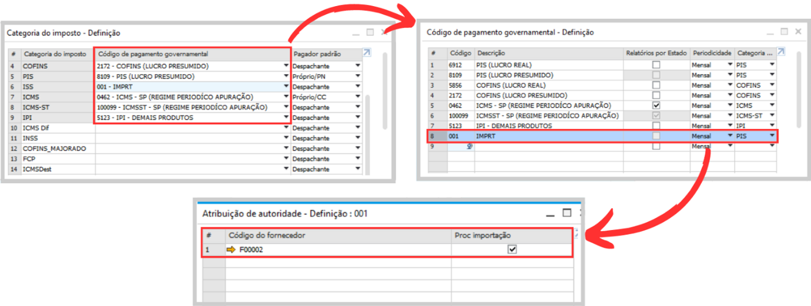
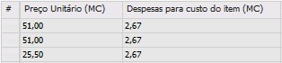
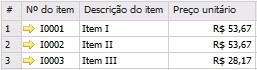
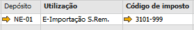
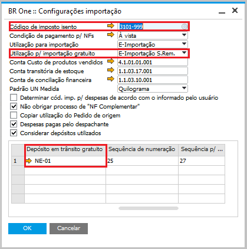
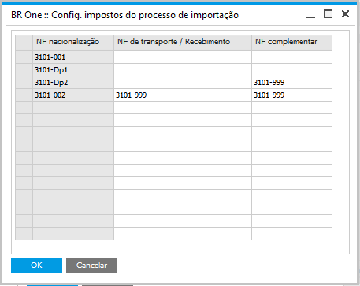
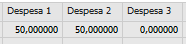
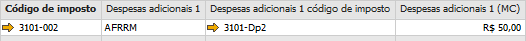
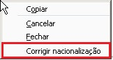
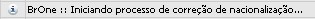

N.F. Nacionalização
Após a chegada da mercadoria no país de destino, deve ser feita a Nacionalização, na qual se utiliza a Nota Fiscal de Entrada. No processo, é gerado um esboço de Nota Fiscal de Entrada e após conferência, o documento deve ser adicionado. No SAP é feito automaticamente um Lançamento Contábil conforme a Nota Fiscal de Entrada, e para o processo seguir corretamente é realizado um LCM de ajuste, no qual é adicionado um valor de débito na Conta Contábil do Fornecedor e os valores de crédito nas contas dos pagadores padrões parametrizadas nas abas de despesas e impostos.
Configuração de Despesas
Para iniciar o processo de Nacionalização é necessário ir na aba Despesas e preencher o campo Taxa de câmbio, as despesas e seu valor, o método de distribuição e pagador padrão. Para mais informações sobre este processo, vide tópico Processo de Rateios de Despesas para a Invoice e para Nacionalização.
O campo do pagador padrão do tipo Próprio/CC irá trazer, no momento do LCM de ajuste, a conta contábil estabelecida no Cadastro do Parceiro de Negócios na aba contabilidade do campo Adiantamentos da própria empresa. Já a escolha de Despachante irá trazer a conta contábil estabelecida no Cadastro do Parceiro de Negócios do código informado para despachante na tela de Processo de importação.
Configuração de Pagador Padrão para Impostos
As configurações de impostos de importação devem ter sido preenchidas corretamente antes da execução deste processo, caso contrário irá aparecer uma mensagem dizendo ser necessário inserir os pagadores padrões dos impostos na aba de imposto da tela de Processo de importação.
Para isso, clique em Atualizar impostos, neste momento irá trazer todos os impostos da tela Categoria do imposto e há a possibilidade de alterar os pagadores padrões já configurados para o processo em questão.
O campo do pagador padrão segue a mesma regra citada para a aba Despesas, ao escolher o tipo Próprio/CC, no momento do LCM de ajuste, será exibida a conta contábil estabelecida no Cadastro do Parceiro de Negócios na aba contabilidade do campo Adiantamentos da própria empresa.
A opção de Despachante irá trazer a conta contábil estabelecida no Cadastro do Parceiro de Negócios do código informado para despachante na tela de Processo de importação.
Já a opção de Próprio/PN irá trazer a conta contábil estabelecida no Cadastro do Parceiro de Negócios do código de fornecedor informado para Atribuição de Autoridade no campo Código de pagamento governamental, dentro da tela de Categoria do Imposto.
{kind=link}
Gerar Nota Fiscal de Entrada – Nacionalização
Ao clicar no botão NF Nacionalização, a tela Assistente p/ criação N.F. Nacionalização será aberta.

Selecione os itens desejados e as quantidades e clique em Selecionar para selecionar as linhas individualmente ou duplo clique no cabeçalho da coluna Selecionado para selecionar todas as linhas. A seguinte mensagem será exibida ao criar a NF nacionalização:
{kind=link}
BR One :: NF de nacionalização. Aguarde…
Será gerado um esboço da NF Nacionalização em moeda corrente.

O preço unitário do item será o preço da coluna Preço Unitário(MC) somado com a coluna Despesas para custo do item(MC) da aba Itens.
 {kind=link}
{kind=link}
A utilização será a configurada no campo Utilização para importação, na tela Configurações de importação. Para itens Gratuitos, a utilização será a do campo Utilização p/ importação gratuito. O depósito será o do campo Depósito em trânsito, e para itens Gratuitos, será do campo Depósito em trânsito gratuito. O código de imposto virá da tela Config. impostos do processo de importação da coluna NF nacionalização.
Caso a versão do SAP Business One utilizada seja a 9.0, o campo considerado será o Só imposto ao invés de Gratuito.
  {kind=link}
{kind=link}
{kind=link}
As despesas que foram calculadas na aba Itens também serão inseridas na NF Nacionalização. Como no exemplo há apenas 2 despesas, será inserida na nota apenas 2 despesas. A coluna Despesas adicionais terá o nome da despesa. A coluna Despesas adicionais (MC) terá o valor definido nas colunas Despesa 1, 2 e 3, ao campo respectivo. A coluna Despesas adicionais código de imposto terá o imposto definido conforme explicado no tópico Códigos de imposto - Configuração.
 {kind=link}
{kind=link}

A sequência de numeração da NF Nacionalização será preenchida com a que foi definida no campo Sequência de numeração nas Configurações de importação. Se o usuário optar por modificar manualmente no próprio documento, ele poderá apenas selecionar as sequências que estejam com as configurações de acordo com o processo de importação, caso contrário o Add-on retornará a seguinte mensagem será exibida:
BR One :: “(-9) BR One :: A sequência de numeração para o documento não está configurada para o processo de importação para essa filial.”.
Deve ser setada na aba Imposto da NF Nacionalização a sequência que está configurada nas configurações de importação. Poderá também escolher a Opção (-1) Manual, sendo possível assim informar uma numeração genérica.

Ao inserir a NF Nacionalização, as seguintes janelas aparecerão, informando o Resumo do LCM que será criado, os LCM gerados e/ou reavaliações.
Quando houver algum item gratuito e não estocável irá ser feito um LCM de Reavaliação:

BR One :: Lançamento para itens não estocáveis e gratuitos gerado com sucesso. N° do lançamento: x
Quando houver algum item gratuito e estocável será feita uma reavaliação:

BR One :: Reavaliação de estoque para itens gratuito gerada com sucesso. N° da Reavaliação: x
Será informado o resumo dos valores do LCM das despesas da Nacionalização que serão ajustadas:

Será informado também o LCM das contas acima que serão ajustadas:

BR One :: Lançamento contábil de ajustes de contas gerado com sucesso. N° do lançamento: x
Nota Fiscal gerada
No botão […] será aberta a NF Nacionalização já criada e com o lançamento de ajuste, LCM de Reavaliação (se houver), reavaliação de estoque (se houver) e recebimento de mercadorias vinculado à nota.

O botão Cancelar documento cancela todos os documentos que estiverem selecionados. Caso seja clicado no botão e não haja nenhuma linha selecionada, a seguinte mensagem será exibida:


BR One :: Selecione ao menos uma linha para realizar o cancelamento dos esboços.
Ao selecionar um ou mais esboços e clicar no botão, eles serão cancelados e a seguinte mensagem será exibida:

BR One :: Os documentos selecionados foram cancelados com sucesso.
O usuário poderá cancelar quantas NF Nacionalização desejar seguindo as regras acima citadas, exceto nos casos em que houver uma Reavaliação de estoque gerada, já que não há suporte a cancelamento (estorno) de Reavaliação de estoque, neste caso, não será permitido o cancelamento do recebimento de mercadoria, que implicará na impossibilidade de se cancelar a NF Nacionalização. Abaixo a mensagem de erro ao tentar cancelar um recebimento que faça parte de nacionalização e que tenha uma reavaliação de estoque vinculada:
{kind=link}
BR One :: Já existe uma reavaliação de estoque vinculada a este recebimento de mercadoria, não é possível cancelar.
Caso seja feito o cancelamento de algum Recebimento de mercadoria e/ou Lançamento contábil, é necessário realizar a correção de Nacionalização, processo que pode ser acessado através do menu de contexto Corrigir nacionalização na tela Processo de importação:
{kind=link}
Após clicar em Corrigir nacionalização é sinalizado o início do processo:
{kind=link}
BR One :: Iniciando processo de correção de nacionalização…
Caso seja criado um novo recebimento de mercadoria:
{kind=link}
Fechamento da Invoice gerado com sucesso. Nº do documento:
Caso seja necessário criar um novo lançamento contábil de correção:
{kind=link}
BR One :: Gerando lançamento contábil de correção…
Caso todos os processos ocorram com sucesso:
{kind=link}
BR One :: Processo de correção finalizado.
Caso a NF de Nacionalização seja gerada totalmente ou parcialmente, não será possível modificar os campos de Peso unit. e Volume na aba de itens, sendo bloqueados para a edição. Se a NF de Nacionalização for cancelada, os campos serão habilitados para a edição. Caso o usuário tente alterar os campos Peso unit. e Volume após gerar a NF de Nacionalização, a seguinte mensagem será exibida:
{kind=link}
BR One :: Não é permitido alterar este campo após a NF de Nacionalização ser gerada.
Lançamento Contábil de Ajuste
Após inserir a Nota Fiscal de Entrada, é feito um LCM de Ajuste a fim de realizar os ajustes financeiros e contábeis no SAP. O Lançamento contábil de ajuste será gerado a cada Nota Fiscal de Nacionalização gerada, portanto se foram feitas 3 notas fiscais, deverão ter 3 Lançamentos Contábeis, uma para cada nota.
Abaixo o detalhamento do Lançamento contábil de ajustes.
Estorno do valor ao PN: Estorna o valor total de todas as NF Nacionalização. As NF Nacionalização geraram crédito para o fornecedor. Desta forma, o lançamento de ajuste realiza o débito estornando todo o valor;
Estorno do estoque contabilizado na Invoice: Reverte o valor total em moeda corrente de estoque contabilizado na Invoice. Neste LCM, é feito um débito para a conta transitória de estoque a fim de ajustar o saldo no momento de fechamento da importação em caso de diferenças de estoque.
Este valor é a soma da quantidade * preço dos itens * taxa de câmbio, resultante no total antes do desconto, exceto para os itens que são Gratuitos(Caso a versão do SAP Business One utilizada seja a 9.0, o campo considerado será o Só imposto).
A Invoice gerou crédito referente ao estoque. Desta forma, o lançamento de ajuste realiza o crédito de todo o valor;
Os parâmetros utilizados para as contas contábeis de despesas e impostos no LCM de ajuste são buscados das abas Despesas e Impostos dentro da tela Processo de Importação, nas quais são definidos os pagadores padrões, já a conta contábil de estoque é buscada na tela de Configuração de Importação no campo de Conta transitória de estoque.
LCM de Reavaliação e Reavaliação de Estoque
Só será gerada a reavaliação de estoque quando houver itens Gratuitos na NF Nacionalização, e ela será feita para ajustar o custo do item. Caso seja um item não estocável e gratuito não irá gerar uma reavaliação de estoque, somente um LCM utilizando como crédito na conta do Razão e débito na conta transitória de estoque.
No momento de nacionalização para itens não estocáveis, caso o mesmo item seja informado em mais de uma nacionalização ou mais de uma linha na mesma nacionalização, é necessário que esse item utilize a mesma conta do razão no processo. Caso contrário a seguinte trava será exibida:
Não é possível adicionar o documento. Conta do Razão para o Item XXXXX diferente da conta XXXX já adicionada anteriormente neste Processo de Importação”.
No momento de reavaliação de estoque de itens Gratuitos na NF Nacionalização, o depósito será o mesmo da NF Nacionalização, as contas de aumento e redução do Razão virão do campo Conta temp. p/ itens gratuito e o valor da coluna Débito/crédito será calculado da seguinte forma:
(Despesas para custo do item (MC) / Quantidade) + Preço Unitário (MC)
Caso a versão do SAP Business One utilizada seja a 9.0, o campo considerado será o Só imposto ao invés de PN Gratuito.
Possíveis ocorrências durante o processo
Caso os itens não tenham sido inseridos e o usuário clique no botão NF Nacionalização, a seguinte mensagem será exibida:
{kind=link}
BR One :: Antes de gerar a NF de nacionalização é necessário inserir os itens.
A NF Nacionalização não pode ser feita sem o rateio de N.F. Nacionalização ter sido processado. Caso o usuário tente inserir uma NF Nacionalização sem ter feito rateio, a seguinte mensagem será exibida:
{kind=link}
BR One :: Realize o processo de Rateio de NF Nacionalização antes de realizar este processo.
A Invoice deve ser criada antes da NF Nacionalização. Caso ela não tenha sido criada e o usuário clique em NF Nacionalização, a seguinte mensagem será exibida:
{kind=link}
BR One :: Realize o processo de “Invoice” antes de realizar este processo.
Não é possível cancelar uma NF Nacionalização sem antes de cancelar o lançamento de reajuste já gerado. Caso o usuário tente cancelar uma NF Nacionalização sem ter cancelado o lançamento de reajuste, a seguinte mensagem será exibida:
{kind=link}
BR One :: Lançamento de reajuste já gerado. Antes de realizar este processo realizar o cancelamento do mesmo.